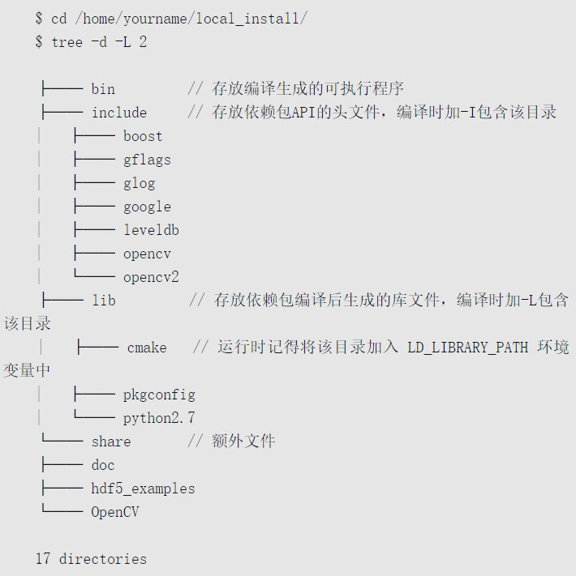

Caffe快速教程
CAFFE编译文件¶
ubuntu环境准备(快速安装)
sudo apt-get install git
sudo apt-get install libprotobuf-dev libleveldb-dev libsnappy-dev libopencv-dev libhdf5-serial-dev protobuf-compiler
sudo apt-get install --no-install-recommends libboost-all-dev
sudo apt-get install libatlas-base-dev
sudo apt-get install libgflags-dev libgoogle-glog-dev liblmdb-dev
ubuntu环境准备(源码安装,可选)
- protobuf
- ProtoBuffer是由Google开发的一种可以实现内存与非易失存储介质（如硬盘文件）交换的协议接口，用户只需要建立统一的参数描述文件（proto），然后利用protoc编译就能让协议细节等关键部分代码自动生成，节省了大量的开发、调试时间
tar -zxvf protobuf-2.5.0.tar.gz
cd protobuf-2.5.0
# 我们并没有将Protobuf安装到系统默认目录/usr/或/usr/local/下，而是安装到本地目录/home/yourname/local_install/下，这样做的好处是便于迁移。在一台机器上安装好的Caffe及其依赖，能迅速迁移到另一台机器上而无须重复编译、安装。后面所有第三方依赖软件包都会安装到这个目录下。
./configure --prefix=/home/yang/local_install/
make
make install
# 校验是否安装成功
ls ~/local_install/bin/ # 显示 protoc即可
# 加入到系统路径,vi .bashrc
export PATH=~/local_install/bin/:$PATH
# 修改Makefile.config
INCLUDE_DIRS += ~/local_install/include
LIBRARY_DIRS += ~/local_install/lib
# caffe生成caffe.pb.h
cd caffe/src/caffe/proto
protoc --cpp_out=./ caffe.proto # 生成caffe.pb.h
- Boost
- 它是一个功能强大、构造精巧、跨平台、开源且免费的库，被称为“C++准标准库”，使用了很多现代编程技术，内容涵盖字符串处理、正则表达式、容器（不是Docker）和数据结构、并发编程、函数式编程、泛型编程、设计模式实现等许多领域，使得C++开发更加灵活、高效。
- 在Caffe中主要使用了Boost中的智能指针，其自带引用计数功能，可避免共享指针时造成内存泄漏或多次释放。另外，pycaffe使用Boost Python实现C/C++和Python语言的连接，方便Python调用C/C++设计的模块。
tar -zxvf boost_1_56_0.tar.bz2
cd boost_1_56_0/
sudo ./bootstrap.sh --with-libraries=system,thread,python
sudo ./b2
# sudo ./b2 install # 安装在系统目录下
# sudo ldconfig
# 需要手动复制到你的安装目录下
cp -r boost/ /home/yang/local_install/include/
cp stage/lib/* /home/yang/local_install/lib/
# 彻底删除boost
cd /usr/local/include
rm -rf boost
cd /usr/local/lib
rm -rf *boost*
- GFLAGS
- GFLAGS在Caffe中主要起到命令行参数解析的作用，这与ProtoBuffer功能类似，只是参数输入源不同。GFLAGS的使用方法可参考Caffe源码中的tools/caffe.cpp。
unzip gflags-2.1.1.zip
cd gflags-2.1.1/
mkdir build && cd build
cmake ..
ccmake ..
# 接下来会弹出ccmake配置界面，修改两个位置
BUILD_SHARED_LIBS ON
CMAKE_INSTALLPREFIX /home/yang/local_install
# 先按C键再按G键，生成Makefile
make
make install
- GLOG
- GLOG库是Google开发的用于记录应用程序日志的实用库，提供基于C++标准输入输出流形式的接口，记录时可选择不同的日志级别，方便将重要日志和普通日志分开。
tar -zxvf glog-0.3.3.tar.gz
cd glog-0.3.3/
./configure --prefix=/home/yang/local_install/
make
make install
- BLAS
- 卷积神经网络中用到的数学计算主要是矩阵、向量的计算，Caffe中调用了BLAS（Basic Linear Algebra Subprograms，基本线性代数子程序）中的相应方法。最常用的BLAS实现有Intel MKL、ATLAS、OpenBLAS等，Caffe可以选择其中任一种。
- OpenBLAS在Caffe中主要负责CPU端的数值计算（如矩阵乘法）。由于调用量相当大，该库的性能直接影响Caffe的运行性能。
- 在GPU端的数值计算则由对应的cuBLAS完成，其API接口与OpenBLAS类似。
- 参考小例子:Caffe源码include/caffe/util/math_functions.hpp中。
# Makefile.config
BLAS := open # atlas/mkl/open,常选用open
tar -zxvf OpenBLAS-0.2.14.tar.gz
cd OpenBLAS-0.2.14/
make -j
make PREFIX=/home/yang/local_install/ install
- HDF5
- 一种能高效存储和分发科学数据的新型数据格式。它可以存储不同类型的图像和数码数据的文件，并且可以在不同类型的机器上传输，同时还有统一处理这种文件格式的函数库。Caffe训练模型可以选择保存为HDF5格式或（默认的）ProtoBuffer格式。
- HDF5的使用方法可参考Caffe源码中的hdf5.hpp和hdf5.cpp。
tar -zxvf hdf5-1.8.9.tar.gz
cd hdf5-1.8.9/
./configure --prefix=/home/yang/local_install/
make -j
make install
- opencv
- OpenCV的使用方法可以参考Caffe源码中的io.hpp和io.cpp。
unzip opencv-3.0.0.zip
cd opencv-3.0.0/
mkdir build && cd build
cmake ..
ccmake ..
make
make install
# 如果make caffe的时候报错:undefined reference tocv::imread(cv::String const &int)..
#原因就是OpenCV 3.0把imread相关函数放到imgcodecs.lib中了，而非原来的imgproc.lib中。解决方法为修改Makefile文件（注意不是Makefile.config），在位置的最后添加opencv_imgcodecs即可。新版Caffe通过在Makefile.config中增加编译选项（OPENCV_VERSION := 3）修复了这一问题。
LIBRARIES += glog gflags protobuf leveldb snappy \
lmdb boost_system hdf5_h1 hdf5 m \
opencv_core opencv-highgui opencv_imgproc opencv_imgcodecs
- LMDB/LEVELDB
- 闪电般的内存映射型数据库管理器，在Caffe中的作用主要是提供数据管理，将形形色色的原始数据（JPEG图片、二进制数据）转换为统一的Key-Value存储，便于Caffe的DataLayer获取这些数据
- LEVELDB库是Caffe早期版本使用的数据存储方式，由Google开发。它是一种持续的键值对存储方式，键和值可以为任意字节数组。键的存储顺序可由用户定义的比较函数决定。目前大部分例程都已经使用
- LMDB和LEVELDB的使用方法可以参考Caffe源码中的db_lmdb.hpp、db_lmdb.cpp、db_leveldb.hpp和db_leveldb.cpp。
# lmdb下载成功后，无需配置，直接编译
make
# 编译成功后
cp lmdb.h /home/yang/local_install/include/
cp liblmdb.so /home/yang/local_install/lib/
# leveldb
make
cp -r include/leveldb /home/yang/local_install/include/
cp libleveldb.so* /home/yang/local_install/lib/
- Snappy
- Snappy是一个用来压缩和解压缩的C++库，旨在提供较高的压缩速度和合理的压缩率。Snappy比zlib更快，但文件相对要大20%～100%。
tar -zxvf snappy-1.1.1.tar.gz
cd snappy-1.1.1/
./configure --prefix=/home/yang/local_install/
make && make install

- 修改
Makefile.config
# 额外头文件、库包含选项，我们需要添加今天的所有依赖安装路径
INCLUDE_DIRS:= /home/yang/local_install/incude $(PYTHON_INCLUDE) /usr/local/include
LIBRARY_DIRS:= /home/yang/local_install/lib $(PYTHON_LIB) /usr/local/lib /usr/lib
# 注意将今天的依赖包路径放在系统路径前面，保证先引用的是编译包而不是系统包
下载caffe源码
git clone https://github.com/bvlc/caffe.git
git clone https://github.com/twtygqyy/caffe-augmentation.git # 更常用，有数据增强部分
cd caffe/
mv Makefile.config.example Makefile.config
执行make
# 编写MakeFile.config（cp MakeFile.config.example MakeFile.config）
# MakeFile的第二行指向的是要make的文件名称，这个可以更改(CONFIG_FILE:=Makefile.config)
make clean
make all -j
make pycaffe
# 使得caffe的python接口永久生效
vim /etc/profile
export PYTHONPATH=/root/$CAFFE_ROOT/python:$PYTHONPATH
source /etc/profile
# make all之前要修改MakeFile.config
## Refer to http://caffe.berkeleyvision.org/installation.html
# Contributions simplifying and improving our build system are welcome!
# cuDNN acceleration switch (uncomment to build with cuDNN).
USE_CUDNN := 1 # 使用GPU，且安装了cudnn后开启
# CPU-only switch (uncomment to build without GPU support).
# CPU_ONLY := 1 # 只使用CPU编译
# uncomment to disable IO dependencies and corresponding data layers
USE_OPENCV := 1 # 一般使用opencv，把这个开启就行
# 下面这两个表示选择caffe的数据管理第三方库，两者都不打开默认用的是LMDB：lmdb的内存消耗是leveldb的1.1倍，但是lmdb的速度比leveldb快10%至15%，更重要的是lmdb允许多种训练模型同时读取同一组数据集，所以默认选lmdb
USE_LEVELDB := 1
# USE_LMDB := 0
# uncomment to allow MDB_NOLOCK when reading LMDB files (only if necessary)
# You should not set this flag if you will be reading LMDBs with any
# possibility of simultaneous read and write
# ALLOW_LMDB_NOLOCK := 1 # 打开这个注释是当需要读取LMDB文件时，默认不打开，所以不取消注释
# Uncomment if you're using OpenCV 3
OPENCV_VERSION := 3 # 用`pkg-config --modversion opencv`命令查看opencv版本
# To customize your choice of compiler, uncomment and set the following.
# N.B. the default for Linux is g++ and the default for OSX is clang++
# CUSTOM_CXX := g++ # linux系统一般用得都是g++编译器
# CUDA directory contains bin/ and lib/ directories that we need.
CUDA_DIR := /usr/local/cuda # 你可以修改你的cuda安装目录
# On Ubuntu 14.04, if cuda tools are installed via
# "sudo apt-get install nvidia-cuda-toolkit" then use this instead:
# CUDA_DIR := /usr
# CUDA architecture setting: going with all of them.
# For CUDA < 6.0, comment the *_50 through *_61 lines for compatibility.
# For CUDA < 8.0, comment the *_60 and *_61 lines for compatibility.
# 这些都是指GPU算力，6.0以下的版本不支持×_50的计算能力:http://www.tuicool.com/articles/qUN322z
# 现在用的cuda9.0/cuda10.0及以上一般都是从sm_30开始
CUDA_ARCH := -gencode arch=compute_20,code=sm_20 \
-gencode arch=compute_20,code=sm_21 \
-gencode arch=compute_30,code=sm_30 \
-gencode arch=compute_35,code=sm_35 \
-gencode arch=compute_50,code=sm_50 \
-gencode arch=compute_52,code=sm_52 \
-gencode arch=compute_60,code=sm_60 \
-gencode arch=compute_61,code=sm_61 \
-gencode arch=compute_61,code=compute_61
# BLAS choice:
# atlas for ATLAS (default)
# mkl for MKL
# open for OpenBlas
# BLAS这个值如果用的是atlas计算库则赋值ATLAS，mkl计算库则用MKL赋值，OpenBlas则赋值open
BLAS := atlas
# Custom (MKL/ATLAS/OpenBLAS) include and lib directories.
# Leave commented to accept the defaults for your choice of BLAS
# (which should work)!
# BLAS_INCLUDE := /path/to/your/blas
# BLAS_LIB := /path/to/your/blas
# Homebrew puts openblas in a directory that is not on the standard search path
# BLAS_INCLUDE := $(shell brew --prefix openblas)/include
# BLAS_LIB := $(shell brew --prefix openblas)/lib
# This is required only if you will compile the matlab interface.
# MATLAB directory should contain the mex binary in /bin.
# MATLAB_DIR := /usr/local
# MATLAB_DIR := /Applications/MATLAB_R2012b.app
# NOTE: this is required only if you will compile the python interface.
# We need to be able to find Python.h and numpy/arrayobject.h.
#PYTHON_INCLUDE := /usr/include/python2.7 \
# /usr/lib/python2.7/dist-packages/numpy/core/include
# Anaconda Python distribution is quite popular. Include path:
# Verify anaconda location, sometimes it's in root.
# python安装位置
ANACONDA_HOME := $(HOME)/anaconda3
PYTHON_INCLUDE := $(ANACONDA_HOME)/include \
$(ANACONDA_HOME)/include/python3.6m \
$(ANACONDA_HOME)/lib/python3.6m/site-packages/numpy/core/include
# Uncomment to use Python 3 (default is Python 2)
# PYTHON_LIBRARIES := boost_python3 python3.5m
# PYTHON_INCLUDE := /usr/include/python3.5m \
# /usr/lib/python3.5/dist-packages/numpy/core/include
# We need to be able to find libpythonX.X.so or .dylib.
# PYTHON_LIB := /usr/lib
PYTHON_LIB := $(ANACONDA_HOME)/lib # python库位置
# Homebrew installs numpy in a non standard path (keg only)
# PYTHON_INCLUDE += $(dir $(shell python -c 'import numpy.core; print(numpy.core.__file__)'))/include
# PYTHON_LIB += $(shell brew --prefix numpy)/lib
# Uncomment to support layers written in Python (will link against Python libs)
# WITH_PYTHON_LAYER := 1
# Whatever else you find you need goes here.
INCLUDE_DIRS := $(PYTHON_INCLUDE) /usr/local/include
LIBRARY_DIRS := $(PYTHON_LIB) /usr/local/lib /usr/lib
# If Homebrew is installed at a non standard location (for example your home directory) and you use it for general dependencies
# INCLUDE_DIRS += $(shell brew --prefix)/include
# LIBRARY_DIRS += $(shell brew --prefix)/lib
# NCCL acceleration switch (uncomment to build with NCCL)
# https://github.com/NVIDIA/nccl (last tested version: v1.2.3-1+cuda8.0)
# USE_NCCL := 1 # 开启多GPU训练，这个前提是系统要装有nccl
# Uncomment to use `pkg-config` to specify OpenCV library paths.
# (Usually not necessary -- OpenCV libraries are normally installed in one of the above $LIBRARY_DIRS.)
# USE_PKG_CONFIG := 1
# N.B. both build and distribute dirs are cleared on `make clean`
BUILD_DIR := build
DISTRIBUTE_DIR := distribute
# Uncomment for debugging. Does not work on OSX due to https://github.com/BVLC/caffe/issues/171
# DEBUG := 1
# The ID of the GPU that 'make runtest' will use to run unit tests.
TEST_GPUID := 0 # 所用的gpu的ID编号
# enable pretty build (comment to see full commands)
Q ?= @
常见编译错误集锦¶
分类LMDB训练集制作¶
扩展1分类多标签LMDB制作
扩展2:单通道灰度图片怎么fine-tune 3通道模型:其实就是把第一层卷积名称更改即可，该层会被随机初始化。
图片目录格式博客
重命名:防止中文干扰
import os
import shutil
import random
#为每个文件改名
ToRename_train = '/home/usr/dataset/train_data'
ToRename_test = '/home/usr/dataset/test_data'
# subDict为子目录的文件夹名，需要手动填写
subDict = ['ao_plate','black_plate','blue_plate','doubleYellow_plate','gang_plate','gua_plate','jiaolian_plate','jing_plate','lingshiguan_plate','newEnergy_plate','nongyong_plate','yellow_plate']
for i in range(len(subDict)):
ToRename_train1 = os.path.join(ToRename_train,subDict[i])
ToRename_test1 = os.path.join(ToRename_test,subDict[i])
if not os.path.exists(ToRename_train1) or not os.path.exists(ToRename_test1):
raise Exception('ERROR')
files_train = list(os.listdir(ToRename_train1))
random.shuffle(files_train)
files_test = list(os.listdir(ToRename_test1))
random.shuffle(files_test)
for s in range(len(files_train)):
oldname = os.path.join(ToRename_train1,files_train[s])
# newname为新的文件名
newname = ToRename_train1+'/newname_train_'+str(s)+'.jpg'
os.rename(oldname,newname)
for s in range(len(files_test)):
oldname = os.path.join(ToRename_test1,files_test[s])
# newname为新的文件名
newname = ToRename_test1+'/newname_test_'+str(s)+'.jpg'
os.rename(oldname,newname)
生成train.txt和test.txt
import os
import shutil
import random
# 形成train和test.txt文件
# 需要更换train_path，test_path和restoreFile
train_path = '/home/usr/dataset/train_data'
test_path = '/home/usr/dataset/test_data'
# 文件夹下的子目录名称
subPath = ['ao_plate','black_plate','blue_plate','doubleYellow_plate','gang_plate','gua_plate','jiaolian_plate','jing_plate','lingshiguan_plate','newEnergy_plate','nongyong_plate','yellow_plate']
# 生成的train.txt或者test.txt存放的位置
restoreFile = '/home/usr/dataset/'
# 生成train.txt
for i in range(len(subPath)):
train_path1 = os.path.join(train_path,subPath[i])
if not os.path.exists(train_path1):
raise Exception('error')
restoreFile_train = os.path.join(restoreFile,'train.txt')
with open(restoreFile_train,'a') as f:
files = os.listdir(train_path1)
for s in files:
f.write(os.path.join(subPath[i],s)+' '+str(i)+'\n') # 存储格式class_name/x.jpg
# 生成test.txt
for i in range(len(subPath)):
test_path1 = os.path.join(test_path,subPath[i])
if not os.path.exists(test_path1):
raise Exception('error')
restoreFile_test = os.path.join(restoreFile,'test.txt')
with open(restoreFile_test,'a') as f:
files = os.listdir(test_path1)
for s in files:
f.write(os.path.join(subPath[i],s)+' '+str(i)+'\n')
生成LMDB
# caffe/examples/imagenet/create_imagenet.sh 拿出该文件并修改运行即可
# 上面四个文件存储文件存放位置:/home/dengshunge/Desktop/convertLMDB
#!/usr/bin/env sh
# Create the imagenet lmdb inputs
# N.B. set the path to the imagenet train + val data dirs
set -e
# 生成的LMDB文件存放的位置
EXAMPLE=/home/dengshunge/Desktop/convertLMDB
# train.txt和test.txt文件放置的位置
DATA=/home/dengshunge/Desktop/convertLMDB
# caffe/build/tools的位置
TOOLS=/home/dengshunge/caffe/build/tools
# 训练集和测试集的位置，记得，最后的 '/' 不要漏了
# 注意这个后面直接拼接train.txt/val.txt里面的每行路径，注意路径问题
TRAIN_DATA_ROOT=/home/dengshunge/Desktop/convertLMDB/data/train_data/
VAL_DATA_ROOT=/home/dengshunge/Desktop/convertLMDB/data/test_data/
# Set RESIZE=true to resize the images to 256x256. Leave as false if images have
# already been resized using another tool.
# 如果需要给该输入图片的大小，将RESIZE设置成true，并图片的高度和宽度
RESIZE=true
if $RESIZE; then
RESIZE_HEIGHT=30
RESIZE_WIDTH=120
else
RESIZE_HEIGHT=0
RESIZE_WIDTH=0
fi
if [ ! -d "$TRAIN_DATA_ROOT" ]; then
echo "Error: TRAIN_DATA_ROOT is not a path to a directory: $TRAIN_DATA_ROOT"
echo "Set the TRAIN_DATA_ROOT variable in create_imagenet.sh to the path" \
"where the ImageNet training data is stored."
exit 1
fi
if [ ! -d "$VAL_DATA_ROOT" ]; then
echo "Error: VAL_DATA_ROOT is not a path to a directory: $VAL_DATA_ROOT"
echo "Set the VAL_DATA_ROOT variable in create_imagenet.sh to the path" \
"where the ImageNet validation data is stored."
exit 1
fi
echo "Creating train lmdb..."
# EXAMPLE/ilsvrc12_train_lmdb中的ilsvrc12_train_lmdb为LMDB的命名，可以按需更改
# DATA/train.txt要与自己生成train.txt名字相对应，不然得更改
# test lmdb同理
GLOG_logtostderr=1 $TOOLS/convert_imageset \
--resize_height=$RESIZE_HEIGHT \
--resize_width=$RESIZE_WIDTH \
--shuffle \
$TRAIN_DATA_ROOT \
$DATA/train.txt \
$EXAMPLE/train_lmdb
echo "Creating test lmdb..."
GLOG_logtostderr=1 $TOOLS/convert_imageset \
--resize_height=$RESIZE_HEIGHT \
--resize_width=$RESIZE_WIDTH \
--shuffle \
$VAL_DATA_ROOT \
$DATA/test.txt \
$EXAMPLE/test_lmdb
echo "Done."
# 生成的LMDB大小如果只有十几KB的话，有可能是生成失败了。可以看到生成LMDB的时候，会自动打乱数据
./create_imagenet.sh -shuffle=true # 注意，这有许多参数可选
# 常用参数
-shuffle=true/false # default=false:打乱原有数据的顺序，生成一个乱序的数据
-gray=true/false # default=false：是否转换成灰度图
-backend="lmdb" # default="lmdb"转换格式 有leveldb，lmdb两种选择
-resize_height=0 # default=0（type:int32）
-resize_width=0 # default=0（type:int32）
-encoded=true/false # default=false，Ture:编码图片将会存储到datum
-encode_type="" # default="",我们用<'png','jpg',....>来编码图片
制作均值文件
如果不制作均值文件，也可以在训练的时候的transform_param上设置mean_value=xxx来代替
layer{
name:"data"
type:"Data"
top:"data"
top:"label"
include {
phase:TRAIN
}
transform_param{
mirror:true
mean_value:127.5
scale:0.0078125
force_gray:true
}
}
为什么需让图片减去均值呢？
- 图像的稳定性(降低波动性)，可以提高分类精度
- 减去均值一般会让亮度下降，但是亮度其实对图像分类来说，不那么重要
- 另外一般会选择对数据进行标准化处理，但是计算图像方差是么有意义的，所以何不选择更加简单的均值规整的办法
- 均值文件只是针对训练集的，不针对验证集
# caffe/examples/imagenet/make_imagenet_mean.sh
#!/usr/bin/env sh
# Compute the mean image from the imagenet training lmdb
# N.B. this is available in data/ilsvrc12
# train_lmdb的LMDB文件存放的位置
EXAMPLE=/home/dengshunge/Desktop/convertLMDB
# DATA为最终要生成的均值文件存放路径
DATA=/home/dengshunge/Desktop/convertLMDB
# caffe/build/tools的位置
TOOLS=/home/dengshunge/caffe/build/tools
$TOOLS/compute_image_mean $EXAMPLE/train_lmdb \
$DATA/your_data_mean.binaryproto
echo "Done."
显示LMDB图片(key=img_name,value=img_data)
import caffe
import os
import lmdb
import numpy as np
import matplotlib.pyplot as plt
def readlmdb(path,visualize = False):
env = lmdb.open(path, readonly=True,lock=False)
txn = env.begin()
datum = caffe.proto.caffe_pb2.Datum()
x,y = [],[]
for key, value in txn.cursor():
# 转换为datum
datum.ParseFromString(value)
# 读取datum数据
img_data = np.array(bytearray(datum.data))\
.reshape(datum.channels, datum.height, datum.width)
print(img_data.shape) # (channel,height,width)
x.append(img_data)
y.append(datum.label) # 类别标签，0/1/...
if visualize:
img_data=img_data.transpose([1,2,0]) #(h,w,c)
img_data = img_data[:, :, ::-1]# BGR-->RGB
plt.imshow(img_data)
plt.show()
print(datum.label)
检测LMDB训练集制作¶
生成train.txt和test.txt
# 左边是图片的地址，右边是对应图片的xml地址，两者用空格相连,这个地址是一个相对地址，之后会与"create_data.sh"中的“data_root_dir”结合，生成绝对地址。
VOC2007/JPEGImages/00001.jpg VOC2007/Annotations/00001.xml
VOC2007/JPEGImages/00002.jpg VOC2007/Annotations/00002.xml
VOC2007/JPEGImages/00003.jpg VOC2007/Annotations/00003.xml
生成labelmap.prototxt和test_name_size.txt
# labelmap.prototxt:多个item组成的，label为0的item是背景，接下来就是你自己标注的label，label的编号最好连续，而且每个label对应的Name需要和xml里面的name一致。
item {
name: "none_of_th_above"
label: 0
display_name: "background"
}
item {
name: "aeroplane"
label: 1
display_name: "aeroplane"
}
item {
name: "bicycle"
label: 2
display_name: "bicycle"
}
# test_name_size.txt:由3列组成，第一列是图片的名称，第二、三列分别是图片的高和宽。注意，这里图片的名称没有后缀名,不知道有什么用，下面函数调用中，并没有引入这个文件
00001 500 353
00002 500 353
00003 500 353
生成LMDB
cur_dir=$(cd $( dirname ${BASH_SOURCE[0]} ) && pwd )
# caffe的路径
root_dir="/home/dengshunge/Tiny-DSOD-master" # 这里主要是用于调用这个路径下的scripts/create_annoset.py
cd $root_dir
redo=1
# 数据的根目录，与txt的文件结合
data_root_dir="/home/dengshunge/Desktop/data"
# trainval.txt和test.txt的路径
txtFileDir="/home/dengshunge/Desktop/LMDB"
# LMDB存储位置
lmdbFile="/home/dengshunge/Desktop/LMDB/lmdb"
# LMDB存储位置的软连接
lmdbLink="/home/dengshunge/Desktop/LMDB/lmdbLink"
# mapfile位置
mapfile="/home/dengshunge/Desktop/LMDB/labelmap.prototxt"
# 任务类型
anno_type="detection"
# 格式
db="lmdb"
# 图片尺寸，若width,height=0,0，说明按原始图片输入尺寸，否则resize到(width,height)
min_dim=0
max_dim=0
width=300
height=300
extra_cmd="--encode-type=jpg --encoded"
if [ $redo ]
then
extra_cmd="$extra_cmd --redo"
fi
for subset in test trainval
do
python3 $root_dir/scripts/create_annoset.py --anno-type=$anno_type --label-map-file=$mapfile --min-dim=$min_dim --max-dim=$max_dim --resize-width=$width --resize-height=$height --check-label $extra_cmd $data_root_dir $txtFileDir/$subset.txt $lmdbFile/$subset"_"$db $lmdbLink
done
训练过程简介¶
run_train.sh编写
CAFFE_HOME=/home/usr/caffe # caffe根目录
SOLVER=./solver.prototxt # solver.prototxt文件路径
WEIGHTS=./weights/init.caffemodel # 初始化模型路径
LOG=./logs/log-'train +%Y-%m-%d-%H-%S'.log
$CAFFE_HOME/build/tools/caffe train \
--solver=$SOLVER \ # 必须参数
--weights=$WEIGHTS \ # 可选参数，此处加载进行finetune
--gpu=0,1,2,3 \
2>&1 | tee $LOG
# 1 表示stdout标准输出；2 表示stderr标准错误；2>&1:把标准错误重定向到标准输出,此时只是输出到窗口上而已；tee会把输出的内容写入到一个或多个文件夹中。
# 断点继续训练
--snapshot=xx.solverstate # 模型保存有两个模型(.caffemodel+.solverstate)，用snapshot代替weights参数，就可以进行断点续训了
run_test.sh编写
CAFFE_HOME=/home/usr/caffe # caffe根目录
MODEL=./train_val.prototxt # 你训练时的net文件
WEIGHTS=./weights/final.caffemodel # 训练好的模型路径
LOG=./logs/log-'test +%Y-%m-%d-%H-%S'.log
$CAFFE_HOME/build/tools/caffe test \
--model=$MODEL \
--weights=$WEIGHTS \ # 可选参数，此处加载进行finetune
--gpu=0 \
2>&1 | tee $LOG
build/tools/caffe参数详解
caffe <command> <args> # caffe命令执行格式
# command命令
1)train：训练或finetune模型（model)
2)test ：测试模型
3)device_query：显示gpu信息
4)time：显示程序执行时间
# args
--solver=xx_solver.protxt # 必选solver配置文件
--gpu=0,1 # 可选参数，-gpu all：表示使用所有的GPU
--snapshot=xx.solverstate # 断点续训(恢复训练)，和--weights只能保留一个
--weights=xx_init.caffemodel # 预训练好的权重来fine-tuning模型，不能和snapshot同时使用
--iterations=50 # 迭代次数，默认50
--model=xx_train_test.prototxt # 可选参数，可以在solver配置文件中指定
--sighup_effect=snapshot(默认)/stop/none # 设定当程序发生挂起事件时，执行的操作
--sigint_effect=stop(默认)/snapshot/none # 设定当程序发生键盘中止事件时（ctrl+c), 执行的操作
# train操作看上面run_train.sh
# test参数操作，用于最终结果输出，模型配置文件中可以设定需要输入的acc或者loss
# 利用训练好了的权重（-weight)，输入到测试模型中(-model)，用编号为0的gpu(-gpu)测试100次(-iteration)
./build/tools/caffe test -model examples/mnist/lenet_train_test.prototxt -weights examples/mnist/lenet_iter_10000.caffemodel -gpu 0 -iterations 100
# time参数：在屏幕上显示程序运行时间
# 在屏幕上显示lenet模型迭代10次所使用的时间。包括每次迭代的forward和backward所用的时间，也包括每层forward和backward所用的平均时间。
./build/tools/caffe time -model examples/mnist/lenet_train_test.prototxt -iterations 10
# device_query：用来诊断gpu信息
./build/tools/caffe device_query -gpu 0 # 打印该GPU的一些信息
tee简介
tee [option]...[file]...
# 1.举个小例子
ping www.baidu.com # 这个会显示连接信息
# 2.使用tee把显示的连接信息写入到文件中,同时输出也会显示到控制台上，如果这个文件存在就会清空后写入
ping www.baidu.com | tee ping_baidu.log
# 3.log文件存在，但不想清空，只想在后面追加
ping www.baidu.com | tee -a ping_baidu.log # 使用-a参数即可
# 4.输出到多个文件中
ping www.baidu.com | tee ping.log ping_baidu.log
solver.prototxt编写¶
solver的主要作用就是交替调用前向（forward)算法和后向（backward)算法来更新参数，从而最小化loss，实际上就是一种迭代的优化算法。
# solver.prototxt
net:"examples/myfile/train_val.prototxt" # 指定训练的网络配置文件
# 也可以单独指定测试模型文件和训练模型文件
#train_net: "examples/hdf5_classification/logreg_auto_train.prototxt"
#test_net: "examples/hdf5_classification/logreg_auto_test.prototxt"
test_iter:100 # test_iter=val数据集总样本数/test_layer层的batchsize
test_interval:500 # 每训练xx次进行一次val验证
# 下面是学习率设置和学习率下降策略，不同的下降策略，参数不同，常用multistep
base_lr: 0.01 # 通常设为0.01比较好
momentum: 0.9 # 梯度下降法中的一种加速收敛的技术，阈值常选:[0.5~0.99]
weight_decay: 0.0005 # L2正则项(对参数取值平方和的惩罚)，为了减弱过拟合
lr_policy: "multistep" # 学习率调整策略
gamma: 0.9
stepvalue: 5000
stepvalue: 7000
stepvalue: 8000
stepvalue: 9000
stepvalue: 9500
# type:"SGD" 默认使用SGD优化策略，如果使用该策略可以不写
display:200 # 每训练xx次在屏幕上显示一次结果，0表示不显示
max_iter:50000 # 最大迭代次数
snapshot:2000 # snapshot用于设置训练多少次后进行保存，默认为0，不保存
snapshot_prefix:"examples/myfile" # 设置保存路径
solver_mode:GPU # CPU/GPU,默认使用GPU
#devide_id: 0,1
# solver6中优化方法，直接在上面改变type和添加对应参数即可，不写默认使用SGD
# 1.SGD
type:"SGD"
# 2.AdaDelta：鲁棒的学习率方法，基于梯度的优化方法，类似SGD
type: "AdaDelta"
delta: 1e-6 # 需要设置delta值
# 3.AdaGrad:自适应梯度，基于梯度的优化方法，类似SGD
type: "AdaGrad"
# 4.Adam:基于梯度的优化方法，类似SGD
type: "Adam"
# 5.Nesterov 的加速梯度法作为凸优化中最理想的方法，其收敛速度非常快。
type: "Nesterov"
# 6.RMSProp:基于梯度的优化方法，类似SGD
type: "RMSProp"
rms_decay: 0.98 # 需要设置rms_decay
# 学习率改变策略,这些都需要几个必须参数，只要更改lr_policy和添加一些必要参数即可
base_lr: 0.01
gamma: 0.1
momentum: 0.9
# 1.fixed: 保持base_lr不变.
lr_policy: "fixed"
# 2.exp:base_lr * gamma ^ iter， iter为当前迭代次数
lr_policy: "exp"
# 3.inv:base_lr * (1 + gamma * iter) ^ (- power)
lr_policy: "inv"
power: 0.75
# 4.poly:学习率进行多项式误差, 返回 base_lr (1 - iter/max_iter) ^ (power)
lr_policy: "poly"
power: 0.75
# 4.sigmoid:学习率进行sigmod衰减，返回 base_lr ( 1/(1 + exp(-gamma * (iter - stepsize))))
lr_policy: "sigmoid"
stepsize: 1000
# 5.step:每隔stepsize次学习率*0.1，不常用，因为最终的lr可能会很小很小
lr_policy: "step"
stepsize: 1000
# 6.multistep:需要设置，stepvalue,multistep则是根据stepvalue值变化
lr_policy: "multistep" # 学习率调整策略
stepvalue: 5000
stepvalue: 7000
stepvalue: 8000
stepvalue: 9000
prototxt文件编写¶
Prototxt包含元素
| 元素 | 解释 |
|---|---|
| name | 该net的名称 |
| layer | 层的规范 |
layer常用参数
| 元素 | 解释 |
|---|---|
| name | 层的名称，可以随意取，但尽量和type类似，例如，input data层名称为“data” |
| type | 层类型： 1.顶层输入层是:Data(常用:表数据来源于LMDB或LevelDB，layer的data参数为data_param{xxx};如果是HDF5数据,type:"HDF5Data",hdft_data_param{xxx}) 2.视觉type:Convolution,Pooling,InnerProduct,BatchNorm+Scale 3.激活type:Sigmoid,ReLU,TanH,AbsVal(绝对值)，Power(幂运算)，BNLL（log(1 + exp(x))） 4.损失type:Softmax/SoftmaxWithLoss 5.其他type:Accuracy,Reshape,Dropout |
| top | 是指该层的**输出的blob的名称**，通过它可以唯一确定一个blob。例如，在训练中，input data层的只有两个top分别为“data”和“label”，分别存放了数据和标签。 |
| bottom | 是指该层的**输入的blob的名称**，input data层是顶层，因此没有bottom blob。该层的输入的bottom一定是它的上一层的top。如果该层的bottom和top相同，则该层的输入和输出占用了一个blob。 |
| include | phase:TRAIN/TEST,如果没有include参数，则表示该层既在训练模型中，又在测试模型中。 |
| data_param | 定义数据参数，数据来源等等 |
| transform_param | 对input数据进行预处理的参数。 |
| param | 定义weight或bias的学习速率和衰减因子参数。 lr_mult:weight或bias的学习速率 decay_mult:weight或bias的衰减因子 |
| convolution_param | 定义卷积层的参数。 |
| lrn_param | 定义归一化层的参数 |
| pooling_param | 定义pooling层的参数 |
| inner_product_param | 定义全连接层的参数 |
| dropout_param | 定义Dropout层的参数 |
| accuracy_param | 定义Accuracy层的参数 |
train_val.prototxt
name: "VGGNet" # 该网络名称，layer:层规范
# 输入层:input_data层是顶层，只有两个输出top分别是"data"和“label”
# 做训练时候的输入层
layer {
name: "data"
type: "Data"
top: "data"
top: "label"
include {
phase: TRAIN # TRAIN训练，TEST测试
}
# 数据增强:https://github.com/twtygqyy/caffe-augmentation
transform_param {
contrast_brightness_adjustment: true # 开启对比度调节
min_contrast: 0.8 # 最小对比度乘子
max_contrast: 1.2 # 最大对比度乘子
smooth_filtering: true # 平滑filter
max_smooth: 6
# min_sid_min/max:不需要再设置new_height/width,图片随机resize到这个区间
min_side_min: 256
min_side_max: 480
# train时会对大于crop_size的图片进行随机裁剪，而在test时只是截取中间部分
crop_size: 224
apply_probability: 0.5 # 每个操作被执行的概率，默认为0.5
max_color_shift: 20 # 在RGB轴上最大的色彩偏移
debug_params: false # 是否打印操作参数，默认false
# mean_file: "imagenet_mean.binaryproto" # 可以用下面的方式代替
# BGR顺序均值
mean_value: 104
mean_value: 117
mean_value: 123
scale: 0.0078125 # 1/128
mirror: true # 是否镜像翻转
}
data_param {
source: "models/vggnet/vgg_train_lmdb" #注意训练集文件的路径
batch_size: 32 #训练批次大小根据自己的显卡显存而定，我开始设为64导致out of memory,于是改成32
backend: LMDB
}
# 如果使用过了上面github的数据增强，可以用image_data_param代替data_param
image_data_param {
source: "all-sample.txt"
batch_size: 128
new_height: 256
new_width: 256
shuffle: true
root_folder: "all-images/"
}
}
# 做验证的时候的输入层
layer {
name: "data"
type: "Data"
top: "data"
top: "label"
include {
phase: TEST # 运行验证集做测试
}
transform_param {
crop_size: 224
mean_value: 104
mean_value: 117
mean_value: 123
scale: 0.0078125 # 1/128
mirror: false
}
data_param {
source: "models/vggnet/vgg_val_lmdb" #注意验证集文件的路径
batch_size: 32
backend: LMDB
}
}
# 卷积层
layer {
name: "conv1_1"
type: "Convolution"
bottom: "data"
top: "conv1_1"
# 定义weight或bias的学习速率和衰减因子参数
param {
lr_mult: 1 # 学习率系数，最终学习率=base_lr*lr_mult,一般定义两个w+bias
}
param {
lr_mult: 1
}
convolution_param {
num_output: 64 # 卷积核个数
kernel_size: 3 # 卷积核大小，如果h/w不一样,则kernel_h,kernel_w分别设定
pad: 1 # 默认0，扩充是左右、上下对称的。pad_h,pad_w分别指定
stride: 1 # 步长,也可以stride_h/stride_w分别设置
weight_filler { # 权重初始化,默认'constant'(0)
type: "xavier"# xavier常用，constant/gaussian/uniform
# std:1 # 标准差；如果是gaussian，则可选的设置它；默认值为1
# mean:0 # 均值；如果是gaussian，则可选的设置它；默认值为0；
# value:0 # 定值；如果是“constant”，则设置它；默认值为0；
}
bias_filler { # 偏置项的初始化
type: "constant" # constant常用，xavier/gaussian/uniform
# std:1 # 标准差；如果是gaussian，则可选的设置它；默认值为1
# mean:0 # 均值；如果是gaussian，则可选的设置它；默认值为0；
# value:0 # 定值；如果是“constant”，则设置它；默认值为0；
}
bias_term: true # 是否开启偏置项，默认为true
group: 1 # 是否分组，默认1，可以按需写，分组卷积，深度可分离卷积等
}
}
# ReLU层
layer {
name: "relu1_1"
type: "ReLU"
bottom: "conv1_1"
top: "conv1_1"
}
# pooling层
layer {
name: "pool1"
type: "Pooling"
bottom: "conv1_1"
top: "pool1"
pooling_param {
pool: MAX # 默认MAX,还有，AVE, 或STOCHASTIC
kernel_size: 2 # 必选，也可以用kernel_h和kernel_w分别设定
stride: 2 # 默认1，一般设为2（即不重叠)。可以用stride_h和stride_w来设置
pad:0
}
}
# 全连接层
layer {
name: "fc6"
type: "InnerProduct"
bottom: "pool1"
top: "fc6"
param {
lr_mult: 1
}
param {
lr_mult: 1
}
inner_product_param {
num_output: 4096
weight_filler {
type: "xavier"
}
bias_filler {
type: "constant"
}
}
}
# 全连接后用ReLU
layer {
name: "relu6"
type: "ReLU"
bottom: "fc6"
top: "fc6"
}
# Dropout层
layer {
name: "drop6"
type: "Dropout"
bottom: "fc6"
top: "fc6"
dropout_param {
dropout_ratio: 0.5 # 只需要设置一个dropout_ratio就可以了
}
}
# 输出分类的准确度，只有test阶段才有，需要加入include参数
layer {
name: "accuracy"
type: "Accuracy"
bottom: "fc6"
bottom: "label"
top: "accuracy"
include {
phase: TEST
}
accuracy_param {
top_k:5 # 如果正确的标签在前k个预测的标签中，则该预测被认为是正确的
}
}
# 计算softmax_loss操作
layer {
name: "loss"
type: "SoftmaxWithLoss"
bottom: "fc6"
bottom: "label"
top: "loss"
}
其它常用层
#BatchNorm层:x_norm = (x-u)/std,Scale层:y=alpha*x_norm + beta
# BatchNorm层
layer {
bottom: "conv1"
top: "conv1"
name: "bn_conv1"
type: "BatchNorm"
batch_norm_param {
# use_global_stats：默认train:false，test:True
# train:false:代表需要批处理的均值方差要参考全局信息来更新
# test:true:代表不使用自己均值方差和全局的均值方差来得到批处理的均值和方差,而是使用全局均值方差,即训练好的均值方差
use_global_stats: false
# moving_average_fraction0.999 # 滑动平均的衰减系数，默认为0.999
# eps： 1e-5 # 分母附加值，防止除以方差时出现除0操作，默认为1e-5
}
}
# Scale层
layer {
bottom: "conv1"
top: "conv1"
name: "scale_conv1"
type: "Scale"
scale_param {
#filler{
# value: 1
#}
bias_term: true # 是否使用偏置
#bias_filler{
# value: 0
#}
}
}
# softmax层
layers {
name: "prob"
bottom: "cls3_fc"
top: "prob"
type: "Softmax"
}
# Reshape层 N*C*H*W-->in:64*3*28*28-->[0,0,14,-1]-->out:64*3*14*56
layer {
name: "reshape"
type: "Reshape"
bottom: "input"
top: "output"
reshape_param {
shape {
dim: 0 # dim:0 表示维度不变，即输入和输出是相同的维度。
dim: 2 # dim:2 或 dim:3 将原来的维度变成2或3
dim: 3
dim: -1 # 表示由系统自动计算维度
}
}
}
cafee的一些特殊层¶
- slice：在某一个维度，按照给定的下标，blob拆分成几块。比如要拆分channel，总数50，下标为10,20,30,40，那就是分成5份，每份10个channel，输出5个layer。
- concat：在某个维度，将输入的layer组合起来，是slice的逆过程。
- split：将blob复制几份，分别给不同的layer，这些上层layer共享这个blob。
- tile：将blob的某个维度，扩大n倍。比如原来是1234，扩大两倍变成12341234。
- reduction：将某个维度缩减至1维，方法可以是sum、mean、asum、sumsq。
- reshape：这个很简单，就是matlab里的reshape。
- eltwise：将几个同样大小的layer，合并为1个，合并方法可以是相加、相乘、取最大。
- flatten：将中间某几维合并，其实可以用reshape代替。
# 举例:Tile层
layer {
name: "tile1"
type: "Tile"
bottom: "Features"
top: "tile1"
tile_param {
axis: 2 # 要扩维的维度
tiles: 2 # 要扩维的倍数
}
}
# scale层,两个输入的时候是点积乘，这个会自动广播，elwise也可以完成但不会自动广播
layer {
name: "inception_3a_prob_reshape"
type: "Reshape"
bottom: "inception_3a_1x1_up"
top: "inception_3a_prob_reshape"
reshape_param {
shape {
dim: 0
dim: 0
}
}
}
layer {
name: "inception_3a_scale"
type: "Scale"
bottom: "inception_3a/concat"
bottom: "inception_3a_prob_reshape"
top: "inception_3a/output"
scale_param {
axis: 0
bias_term: false
}
}
deploy.prototxt文件改写¶
1.改写输入数据层
# 1.去除train_val.prototxt的数据输入层
# 2.添加test的数据输入层
layer {
name: "data"
type: "Input" # 注意该type
top: "data"
input_param {
shape: {
dim: 1
dim: 3
dim: 224
dim: 224
}
}
}
2.中间的cv层无需改动
3.改写尾部层
# 1.去除Accuracy和loss层(SoftmaxWithLoss层)，loss有几个删除并改写几个
# 2.添加预测层
layer {
name: "prob"
type: "Softmax"
bottom: "ip2"
top: "prob"
}
根据log绘制acc+loss¶
#!/usr/bin/python
# -*- coding: UTF-8 -*-
import os
import numpy as np
import matplotlib.pyplot as plt
import sys
import math
#解析出训练和测试的log信息
def get_loss_acc(log_path):
train_iters=[]
train_losses=[]
test_iters=[]
test_losses=[]
test_accs=[]
train_accs = []
learn_rates=[]
log=open(log_path,"r",encoding='utf-8')
for line in log:
#train iter & loss
if "Iteration" in line and "loss" in line:
iter=int((line.strip().split()[5]).split(",")[0])
#print (iter)
train_loss=float(line.strip().split()[-1])
train_iters.append(iter)
#print (train_loss)
train_losses.append(train_loss)
#test iter
if "Iteration" in line and "Testing" in line:
test_iter=int(line.strip().split()[5][:-1])
test_iters.append(test_iter)
#test loss
if "Test net output #1" in line:
test_loss=float((line.strip().split(' = ')[-1])[:-6])
test_losses.append(test_loss)
#test acc
if "Test" in line and "acc" in line:
acc=float(line.strip().split("=")[-1])
test_accs.append(acc)
# train acc
if "Train" in line and "acc" in line:
acc=float(line.strip().split("=")[-1])
train_accs.append(acc)
#train lr
if "lr" in line and "Iteration" in line:
lr=float(line.strip().split("=")[-1])
learn_rates.append(lr)
#有时学习率个数和train iter的个数不相等，这里使用最后几次的学习率补齐
while (len(learn_rates)<len(train_iters)):
learn_rates.append(learn_rates[-1])
return train_iters,train_losses,test_iters,test_losses,test_accs,learn_rates,train_accs
#画多个曲线，一张图上画acc,train loss,test loss，lr
def plot_muilti_figs(log_path,log_file,log_fig):
train_iters,train_losses,test_iters,test_losses,test_accs,learn_rates,train_accs=get_loss_acc(log_path+"/"+log_file)
print ("train iters: ",len(train_iters))
print ("train losses: ",len(train_losses))
print ("test iters: ",len(test_iters))
print ("test losses: ",len(test_losses))
print ("train accs: ",len(train_accs))
print ("test accs: ",len(test_accs))
print ("learn_rates: ",len(learn_rates))
fig=plt.figure(figsize=(12,9)) #画布大小为1200*900，默认是800*600，也就是figsize=(8,6)
plt.subplot(211)
plt.plot(train_iters, train_losses, 'b-',label="train loss")
plt.plot(test_iters, test_losses, 'r-',label="test loss")
plt.legend(loc = 1, ncol = 1) # ajust ncol to fit the space
plt.grid(True)
plt.subplot(223)
plt.plot(train_iters, train_accs, 'r-',label="train_acc")
plt.plot(test_iters, test_accs, 'g-',label="val_acc")
plt.legend(loc='lower right')
#plt.legend(loc = 5, ncol = 1) # ajust ncol to fit the space
plt.grid(True)
plt.subplot(224)
plt.plot(train_iters, learn_rates,"m",label="lr")
plt.legend(loc = 1, ncol = 1) # ajust ncol to fit the space
plt.grid(True)
#置于所有画图程序最后，但在show函数前,使整个图更协调，文字不重叠,若数字太多，可适当增大画布尺寸
fig.tight_layout()
plt.savefig(log_path+"/"+log_fig+".png")
plt.show()
if __name__=="__main__":
log_path=os.getcwd() #与log文件放在一个文件夹下
log_file=sys.argv[1] #训练log文件名
log_fig=sys.argv[2] #要保存的图片名称，不带后缀
plot_muilti_figs(log_path,log_file,log_fig)
常用PythonApi¶
推理python代码
#caffe.set_cpu()
caffe.set_device(0)
caffe.set_model_gpu()
deploy = "xxx.prototxt"
model = "xxx.caffemodel"
# 数据预处理
transformer = caffe.io.Transformer({'data':net.blobs['data'].data.shape})
transformer.set_transpose('data',(2,0,1)) # h,w,c --> c,h,w
#mu = np.load("xxx_mean.npy") # mean文件
#mu = mu.mean(1).mean(1) # 对所有像素值取平均以此获取BGR的均值像素值
#transformer.set_mean('data',mu) # 对于每个通道，减去BGR的均值像素
transformer.set_mean('data',np.array([127.5]))
transformer.set_input_scale('data',0.0078125)
transformer.set_raw_scale('data',255) # 将像素值从[0,255]-->[0,1]之间
transformer.set_channel_swap('data',(2,1,0)) # RGB->BGR
image = caffe.io.load_image("xxx.jpg")
# plt.imshow(image);plt.show()
data = transformer.preprocess('data',image)
# 前向传播
net = caffe.Net(deploy,model,caffe.TEST)
net.blobs['data'].reshape(1,3,data.shape[1],data.shape[2]) # data->(c,h,w)
net.blobs['data'].data[...] = data
out = net.forward()
# 获取blob的各层名字以及shape:(n,c,h,w)
for layer_name,blob in net.blobs.items():
print(layer_name,blob.data.shape)
# 显示各层的参数信息：
# layer_name:权重名
# param[0]:weights->(output_channels, input_channels, filter_height, filter_width)
# param[1]:bias-->(output_channels,)
for layer_name,param in net.params.items():
print(layer_name,param[0].data.shape)
# 显示各层的type
for index,layer in enumerate(net.layers):
print(layer.type)
print(net._layer_names[index]) # 显示layer的name
# 显示各层特征图
def show_data(data, padsize=1, padval=0):
data -= data.min()
data /= data.max()
# force the number of filters to be square
n = int(np.ceil(np.sqrt(data.shape[0])))
padding = ((0, n ** 2 - data.shape[0]), (0, padsize), (0, padsize)) + ((0, 0),) * (data.ndim - 3)
data = np.pad(data, padding, mode='constant', constant_values=(padval, padval))
# tile the filters into an image
data = data.reshape((n, n) + data.shape[1:]).transpose((0, 2, 1, 3) + tuple(range(4, data.ndim + 1)))
data = data.reshape((n * data.shape[1], n * data.shape[3]) + data.shape[4:])
plt.figure()
plt.imshow(data,cmap='gray')
plt.axis('off')
# 调用
show_data(net.blobs['conv2'].data[0],padval=0.5) # 显示全部
show_data(net.blobs['conv3'].data[0][1:100],padval=0.5) # 取前100个进行显示(数量太多看不清,可以先选择部分显示)
caffe.proto
from caffe.proto import caffe_pb2
from google.protobuf import text_format
import google.protobuf as pb
# 1.加载处理deploy.prototxt
deploy = "xx.prototxt"
with open(deploy) as f:
train_str = f.read() # 一次读取所有内容
train_net = caffe_pb2.NetParameter() # 建立一个空的prototxt
text_format.Merge(train_str, train_net) # 填充空的prototxt，方便使用python代码访问各层和各参数
#等价于 text_format.Parse(train_str,train_net)
# 清除该模型
train_net.Clear()
# 遍历prototxt的所有层
for layer in train_net.layer:
# layer.type->'xxx',layer.top/bottom->['xxx']
print(layer.name,layer.type,layer.bottom,layer.top,layer.xx_param,....)# 打印每层的参数
# 移出某一层
train_net.layer.remove(train_net.layer[1])
# 移出某层某参数
train_net.layer[0].include.remove(train_net.layer[0].include[0])
# 修改某层某参数
train_net.layer[6].convolution_param.bias_term = False # 设置某层卷积的bias_term为False
# 存储prototxt
with open("save.prototxt",'w') as fs:
fs.write(text_format.MessageToString(train_net))
# 2.加载处理caffemodel
model_path = "xxx.caffemodel"
net = caffe_pb2.NetParameter()
with open(model_path,'rb') as fp:
train_net_str = fp.read()
net.ParseFromString(train_net_str)# 此时net已经加载进来了
# 存储caffemodel
net.save("save.caffemodel")
自定义C++层¶
- 写
xxx.hpp，放到caffe/include/caffe/layers - 写
xxx.cpp，放到caffe/src/caffe/layers - 如果该层有参数需要修改
caffe/src/proto/caffe.proto
无参数层
我们定义了一个最精简的层，该层没有配置参数，data从bottom进来，又从top出去，没做任何其他操作。所以无需修改proto文件，把这两个文件放到对应位置后，编译即可使用
layer {
name:"NewLayer"
type:"New" #定义
bottom: "data"
top:"data"
}
// xxx.hpp
#ifndef CAFFE_NEW_LAYER_HPP_
#define CAFFE_NEW_LAYER_HPP_
#include <vector>
#include "caffe/blob.hpp"
#include "caffe/layer.hpp"
#include "caffe/proto/caffe.pb.h"
namespace caffe {
template <typename Dtype>
class NewLayer : public Layer<Dtype> {
public:
explicit NewLayer(const LayerParameter& param)
: Layer<Dtype>(param) {}
virtual void LayerSetUp(const vector<Blob<Dtype>*>& bottom,
const vector<Blob<Dtype>*>& top){};
virtual void Reshape(const vector<Blob<Dtype>*>& bottom,
const vector<Blob<Dtype>*>& top){};
protected:
virtual void Forward_cpu(const vector<Blob<Dtype>*>& bottom,
const vector<Blob<Dtype>*>& top);
virtual void Backward_cpu(const vector<Blob<Dtype>*>& top,
const vector<bool>& propagate_down, const vector<Blob<Dtype>*>& bottom);
virtual void Forward_gpu(const vector<Blob<Dtype>*>& bottom,
const vector<Blob<Dtype>*>& top){};
virtual void Backward_gpu(const vector<Blob<Dtype>*>& top,
const vector<bool>& propagate_down, const vector<Blob<Dtype>*>& bottom){};
};
}
#endif
// xxx.cpp
#include <vector>
#include "caffe/layers/new_layer.hpp"
namespace caffe {
template <typename Dtype>
void NewLayer<Dtype>::Forward_cpu(const vector<Blob<Dtype>*>& bottom,
const vector<Blob<Dtype>*>& top) {
const Dtype* bottom_data = bottom[0]->cpu_data();
Dtype* top_data = top[0]->mutable_cpu_data();
const int count = bottom[0]->count();
for (int i = 0; i < count; ++i) {
top_data[i] = bottom_data[i];
}
}
template <typename Dtype>
void NewLayer<Dtype>::Backward_cpu(const vector<Blob<Dtype>*>& top,
const vector<bool>& propagate_down,
const vector<Blob<Dtype>*>& bottom) {
if (propagate_down[0]) {
const Dtype* bottom_data = bottom[0]->cpu_data();
const Dtype* top_diff = top[0]->cpu_diff();
Dtype* bottom_diff = bottom[0]->mutable_cpu_diff();
const int count = bottom[0]->count();
for (int i = 0; i < count; ++i) {
bottom_diff[i] = top_diff[i];
}
}
}
#ifdef CPU_ONLY
STUB_GPU(NewLayer);
#endif
INSTANTIATE_CLASS(NewLayer); //类名，注：这个类名与prototxt文件中的层名不需一致
REGISTER_LAYER_CLASS(New); // 对应层的类型
} // namespace caffe
添加带参数的层

layer {
name:"NewLayer"
type:"New"
bottom: "data"
top:"data"
new_param {
coeff1: 1.0
coeff2: 2.0
}
}
// xxx.hpp 和上面一样
// xxx.cpp
#include <vector>
#include "caffe/layers/new_layer.hpp"
namespace caffe {
template <typename Dtype>
void NewLayer<Dtype>::Forward_cpu(const vector<Blob<Dtype>*>& bottom,
const vector<Blob<Dtype>*>& top) {
const Dtype* bottom_data = bottom[0]->cpu_data();
Dtype* top_data = top[0]->mutable_cpu_data();
const int count = bottom[0]->count();
float coeff = this->layer_param_.new_param().coeff1(); // 获取参数
LOG(INFO) << "NewLayer, Forward_cpu:" << coeff;
for (int i = 0; i < count; ++i) {
top_data[i] = bottom_data[i];
}
}
template <typename Dtype>
void NewLayer<Dtype>::Backward_cpu(const vector<Blob<Dtype>*>& top,
const vector<bool>& propagate_down,
const vector<Blob<Dtype>*>& bottom) {
float coeff = this->layer_param_.new_param().coeff2(); // 获取参数
LOG(INFO) << "NewLayer, Backward_cpu:" << coeff;
if (propagate_down[0]) {
const Dtype* bottom_data = bottom[0]->cpu_data();
const Dtype* top_diff = top[0]->cpu_diff();
Dtype* bottom_diff = bottom[0]->mutable_cpu_diff();
const int count = bottom[0]->count();
for (int i = 0; i < count; ++i) {
bottom_diff[i] = top_diff[i];
}
}
}
#ifdef CPU_ONLY
STUB_GPU(NewLayer);
#endif
INSTANTIATE_CLASS(NewLayer); //类名，对应prototxt文件中的层名
REGISTER_LAYER_CLASS(New); // 对应层的类型type
} // namespace caffe
// 修改caffe.proto，需要修改两处
// 1.在message LayerParameter下添加
optional NewParameter new_param = 151;// 注意设定的ID值不能与其他已设置的有相同，而message LayerParameter上面注明了可以设定的、没有冲突的ID值。
// 2.在其他位置添加一个NewLayer层的message函数：
message NewParameter{
optional float coeff1 = 1 [default = 1];
optional float coeff2 = 2 [default = 2];
}